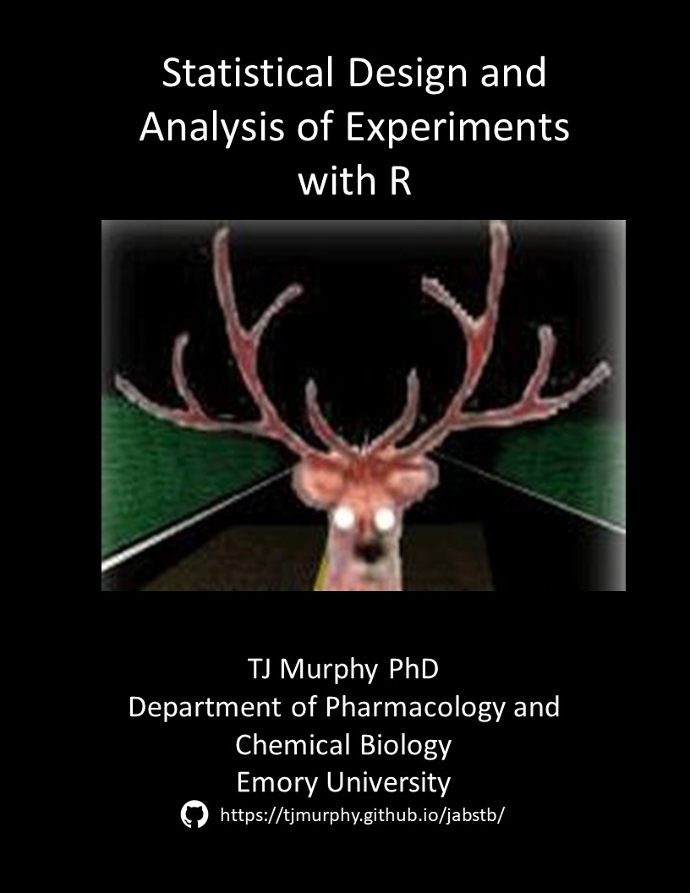

JABSTB: Statistical Design and Analysis of Experiments with R
TJ Murphy PhD, Department of Pharmacology, School of Medicine, Department of Biostatistics and Bioinformatics, Rollins School of Public Health, Emory University, Atlanta, GA biostats538@gmail.com
2018-12-11
 # Preface {-}
This is book is intended primarily as a resource for students enrolled in an biostats course that I teach at Emory University. That course and this book share the same title, which pretty much says what this is all about.
The audience is primarily the students in Emory University’s interdepartmental biomedical and biological sciences PhD programs. There are ocassional Emory honors program undergrads, students from Emory’s public health school, and usually a few Georgia Tech graduate students.
Not included in this book are additional materials for the course (eg, take home and group exercises, slide decks, data sets, cartoons, etc).
Each chapter corresponds to a RMarkdown document. If you’d like those documents instead simply fork, clone or download them from Github jabstb repo. Just bear in mind, this book is a living document and will be subjected to a lot of on-the-fly revision. As I write these words in Dec 2018, my main disclaimer is that it is definitely an MVP.
Most of the students taking this course have not used R previously. Fortunately, running statistical analysis with R is pretty straightforward (once the data are in a shape that they can be analyzed). Students will learn R by doing statistical analysis. So my #1 piece of advice is to just write the code in my examples and start working with it on your own computer.
If you find errors or would otherwise like to contribute, please submit a pull request or contact me by email.
Copyright 2018 © TJ Murphy MIT license.